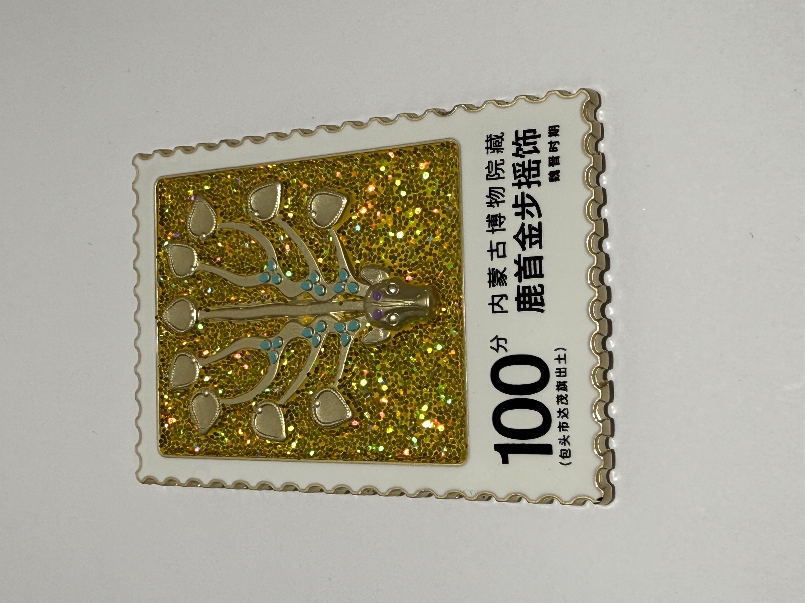
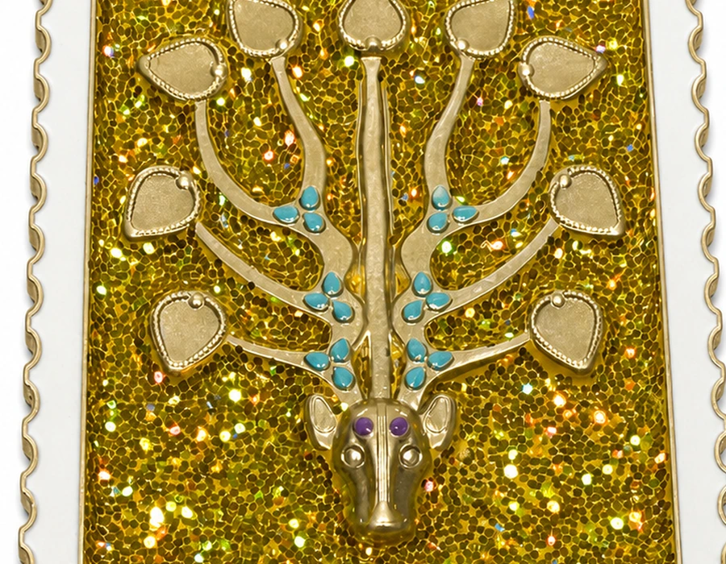
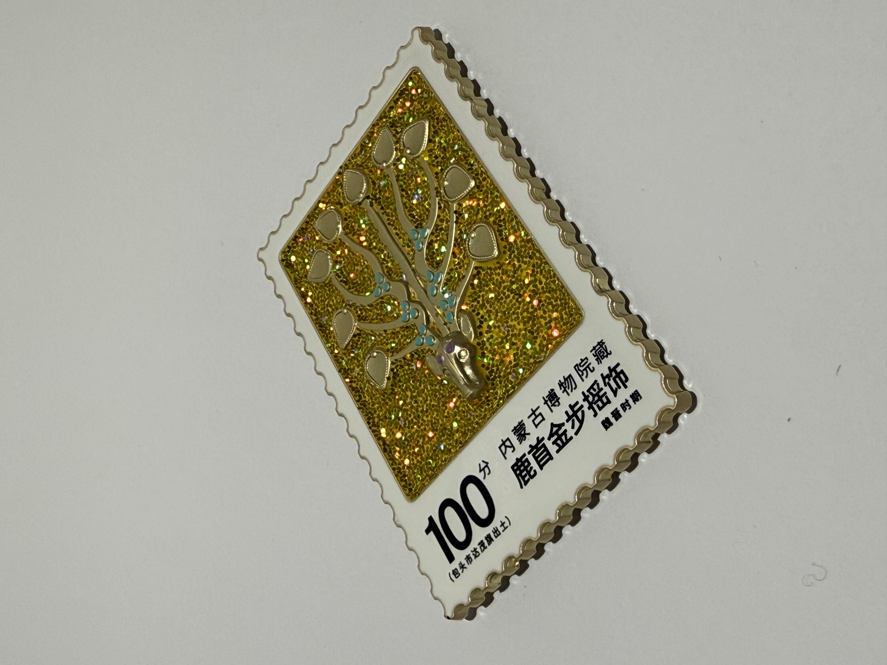
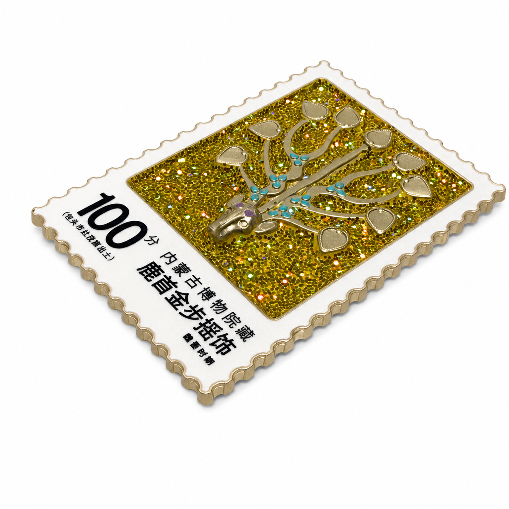
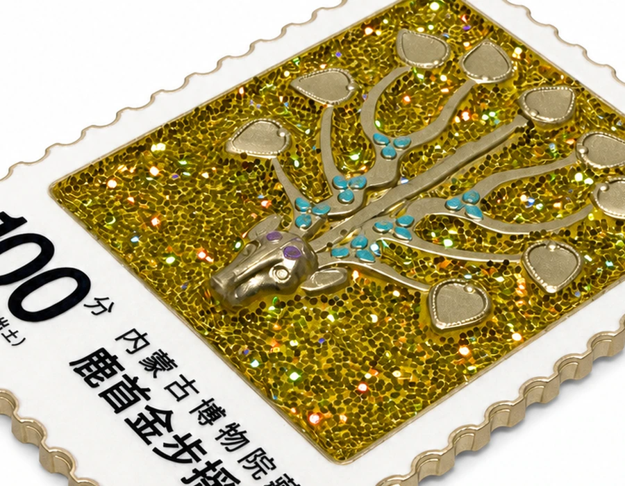
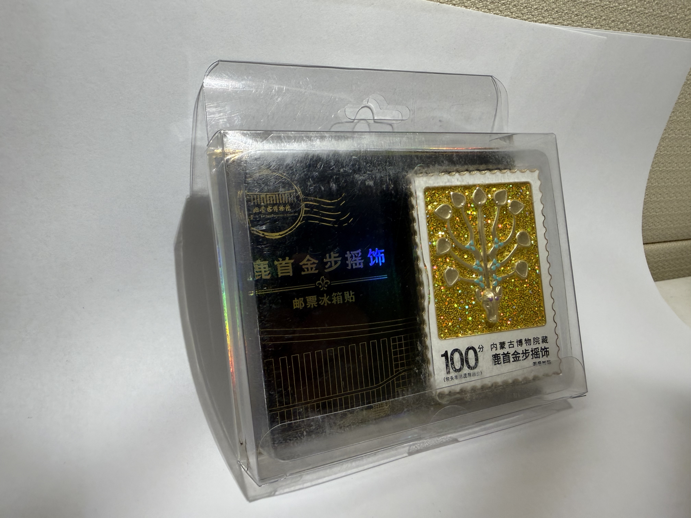
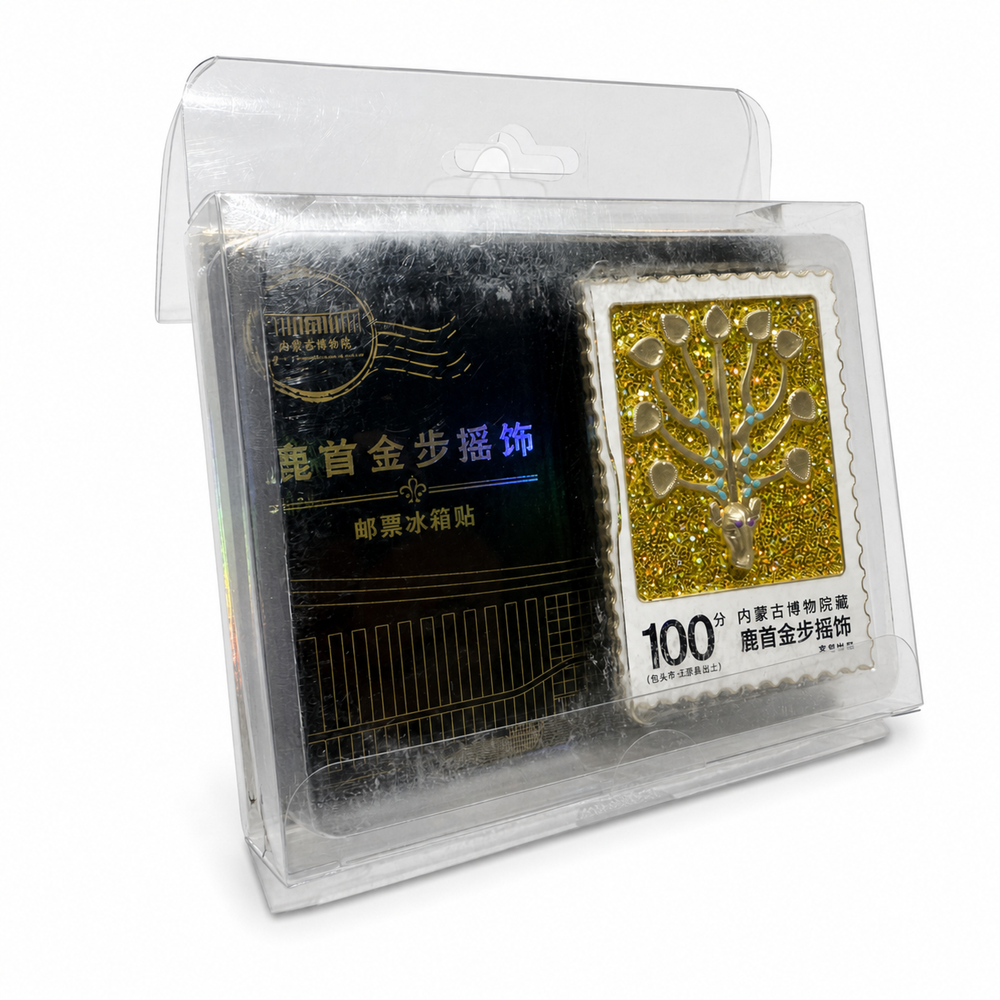
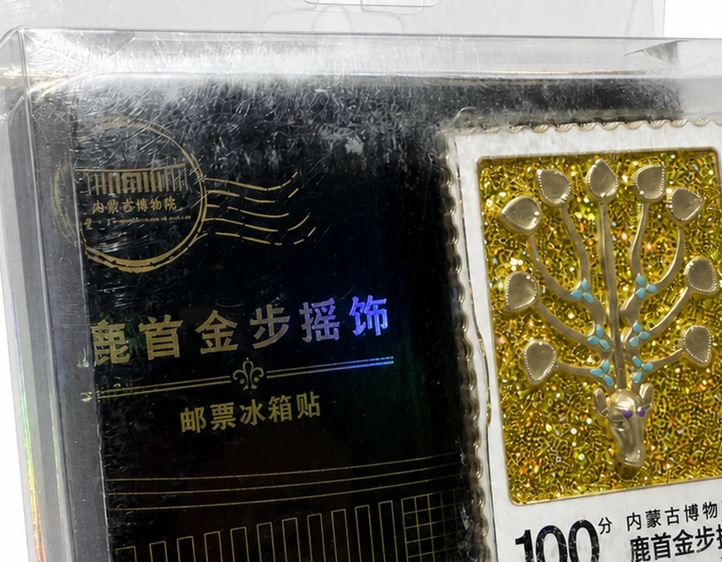

Auctus Heritage · single-product gate
鹿首金步摇饰
Reference-image editing test only. The background was visibly replaced with a white studio canvas, but the editing model cannot certify pixel-identical text, glitter, or micro-detail preservation. No website files were changed.

Original source Processed test 
Processed detail zoom
Source filename hero-original.jpg
Output dimensions 2048 × 2048 px
Detected bounding box [424, 199, 1728, 1844]
Bounding-box coverage 51.1%
Non-white pixel coverage 47.3%
Corner verification RGB(254,254,255), RGB(255,255,255), RGB(254,254,254), RGB(253,252,253)
Source SHA-256 5e001cfa73fee4b9903a74df43fcc208f29d9bae4fd79eb3b058f44edb3eb480Output SHA-256 fb8d74c5d469aaf991f561da346309746626b6a9ba1e462a721c9bd658b84d39Hashes differ YES
OCR-visible text Main visible text appears consistent by visual review; automated character-level preservation is not proven.
Proposed destination product-images/deer-head-gold-step-shake/hero.webp
Warnings Reference-image model may have reconstructed glitter texture and micro-details. Requires manual pixel-level comparison before publication.

Original source 
Processed test 
Processed detail zoom
Source filename gallery-01-original.jpg
Output dimensions 2048 × 2048 px
Detected bounding box [125, 242, 2036, 1652]
Bounding-box coverage 64.2%
Non-white pixel coverage 31.4%
Corner verification RGB(254,255,255), RGB(255,255,255), RGB(254,253,253), RGB(253,253,253)
Source SHA-256 f7fd3f719db618a011b0dcf3882e8a4828147626b73a99c4363638dfc08366e9Output SHA-256 a67263a40433f4839ed214e174366791a688b1386dedc668bbc8d15be2d85839Hashes differ YES
OCR-visible text NOT CONSISTENT: small Chinese text shows visible model reconstruction.
Proposed destination product-images/deer-head-gold-step-shake/gallery-01.webp
Warnings NEEDS_MANUAL_RETOUCH: small printed characters are not reliably preserved. Glitter distribution cannot be certified as identical to the source.
packaging-review
packaging-review.png NEEDS MANUAL RETOUCH

Original source 
Processed test 
Processed detail zoom
Source filename packaging-review-original.jpg
Output dimensions 2048 × 2048 px
Detected bounding box [316, 113, 1893, 1903]
Bounding-box coverage 67.3%
Non-white pixel coverage 52.1%
Corner verification RGB(254,255,255), RGB(255,255,255), RGB(254,254,254), RGB(253,253,253)
Source SHA-256 8c4bc53ae7ab077ade4fe50566e7607f0aeb573af23cfe6a9c0c1f5428329b2bOutput SHA-256 59c98141efa03949c02d1e01f4ed827cf00d57a78bf66bbd28683993a0009d95Hashes differ YES
OCR-visible text NOT CONSISTENT: fine package text and underlying card text are not reliably preserved.
Proposed destination product-images/deer-head-gold-step-shake/packaging.webp (proposed only)
Warnings NEEDS_MANUAL_RETOUCH: transparent plastic and fine text were model-reconstructed. Review-only file; must not be published.